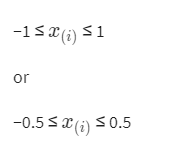
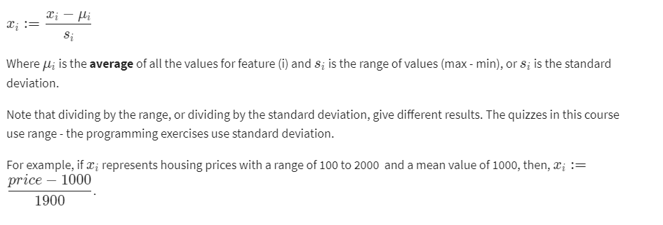

Speeding gradient:
We can speed up gradient descent by having each of our unuts values in roughly the same range.
This is because θ will descend quickly on small ranges and slowy on large ranges, and so will oscillate inefficently down to the optimum when the variables are vey uneven.
The way to prevent this is to modify the ranges of our input variables so that they are all roughly the same.
Ideally: 
Range may vary with requirements. We are only trying to speed things up.The goal is to get all input variables into roughly one of these ranges, give or take a few.
Two techniques to help with speeding gradient descent are Feature Scaling and Mean Normalization.
Feature Scaling: It involves dividing the input values by the range(i.e the maximum values minus the minimum value) of the input values, resulting in a new range of just 1.
Mean Normalization: It involves subtracting the average value for an input variable fro mthe values for that input variable resulting ina new average value for the unput variable of just zero.
To implement both of these techinques, adjust your input values as shown in this formula:
